Zinc Engine 是一个在 Scratch 中渲染用户界面的工具，通过 Zinc Engine 可以仅使用代码块就快速构建出灵活的界面。
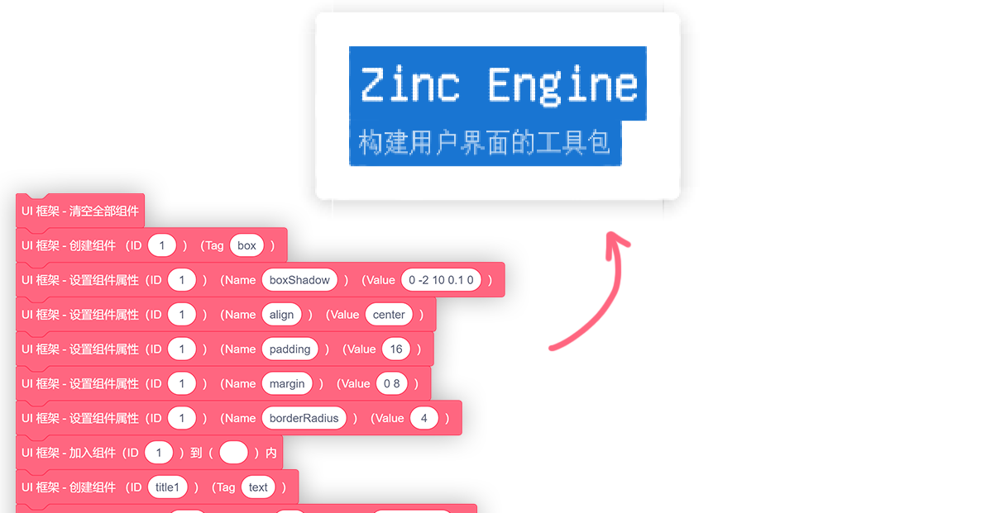
这是一个实验性项目，仍需进一步改进以提升性能。
预览
优化
通过将作品中需要打印的文字存储为为矢量造型、在需要打印时直接图章的方式可以一定程度上地提升 Zinc Engine 的性能。通过下方的工具即可一键对使用 Zinc Engine 的作品进行优化 ↓
感谢：Unifont、opentype.js、jszip、crypto-js。
使用指南
入门
在开始前，请先将角色 【Zinc Engine】（引擎本体） 和 【Zinc Engine】工具包 导入到作品中。
用户界面由一个个的组件组成，通过提供的自定义模块可以控制组件的属性以及组件的创建、加入页面和删除，我们提供了这些自定义模块：
- 创建组件
IDTag：创建 ID 为ID、标签名为Tag的组件。 - 设置组件属性
IDNameValue：设置 ID 为ID的组件的属性Name值为Value。 - 加入组件
ID到TargetID内：将 ID 为ID的组件加入到 ID 为TargetID的组件里。 - 插入组件
ID到TargetID前：将 ID 为ID的组件插入到 ID 为TargetID的组件的前面。 - 删除组件
ID：删除 ID 为ID的组件。 - 清空全部组件：清空全部组件。
- 获取组件属性
IDName：获取 ID 为ID的组件的属性Name的值。
上方的模块可以在角色 【Zinc Engine】工具包 中找到。
整个页面的根组件 ID 为空，是自动创建的。整个页面的第一个组件应该被加入到这个根组件中。
这是一个 Hello World 页面：
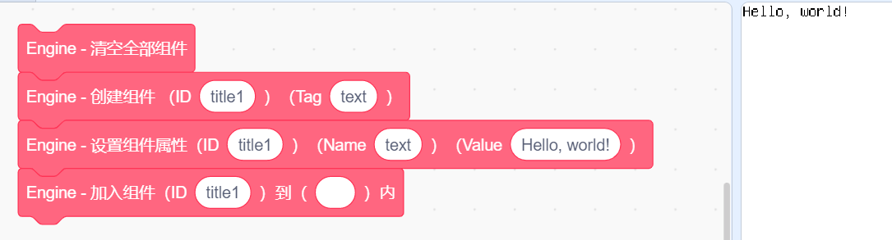
（左侧的积木先是清空了组件列表，然后创建了 ID 为 title1 的文本组件 Text，创建完成后将这个组件的 text 属性值设为了 Hello, world!，最后加入到了 ID 为空的根组件中）
搭建完成后，请运行左侧的积木并点击绿旗，即可看到渲染出来的页面。
Tips:
- 当程序正常运行时，使用自定义模块更改组件将会自动重新渲染页面，除此之外，还可以通过广播 [ Zinc Engine - 渲染 ] 来手动渲染页面。
（若将 Zinc Engine 渲染的页面作为您作品的一部分、并不需要一直展示 Zinc Engine 渲染的页面，就可以关闭自动渲染、然后在需要展示页面时通过广播来渲染页面） - 设置组件属性前必须先创建组件。
将组件 A 加入到组件 B 时，组件 B 必须存在且已经被加入到了页面中。
（创建组件 → 设置属性 → 加入到页面）
组件
文本组件 Text
这个组件类似 HTML 中的 span，用于展示文字。
该组件有几个特色属性：
- 文本内容
text：
一个字符串，该文本组件所显示的文本内容，支持转义、换行符（\n）。例如秦时明月汉时关\n万里长征人未还。 - 文本大小
fontSize：
一个数字，默认为16，为每个文字的宽高。 - 行高度
lineHeight：
一个数字，即每行文字占用的高度。 - 字重
fontWeight：
一个数字，默认为1，为文字的粗细。
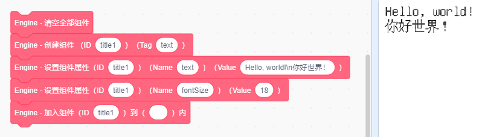
- 文本内容
盒子组件 Box
这个组件类似 HTML 中的 div，像是盒子一样、可以嵌套其他的组件。
该组件拥有两个特色属性：
排列方向
direction：
x或y。
默认为y，Box 中的组件将按顺序从上到下排列，例如下图中最外层的 Boxbox1。
当值为x时，Box 中的组件会从左到右排列，例如下图中包裹着 Button 组建的 Boxbox2。允许换行
wrap：
false或true。
默认为false、此时无论 Box 内的内容有多长都不会换行；当值为true时，如果 Box 中的内容大于所设定的width或height时，便会自动换行。溢出行为
overflow：
auto、visible或hidden。
默认是auto，当组件内内容溢出规定的长 / 宽时会截断内容，并启用滚动以便查看全部内容。
当值为hidden时，组件内内容若溢出便会被截断，但不会启用滚动。
当值为visible时，组件内内容即使溢出也不会被截断。
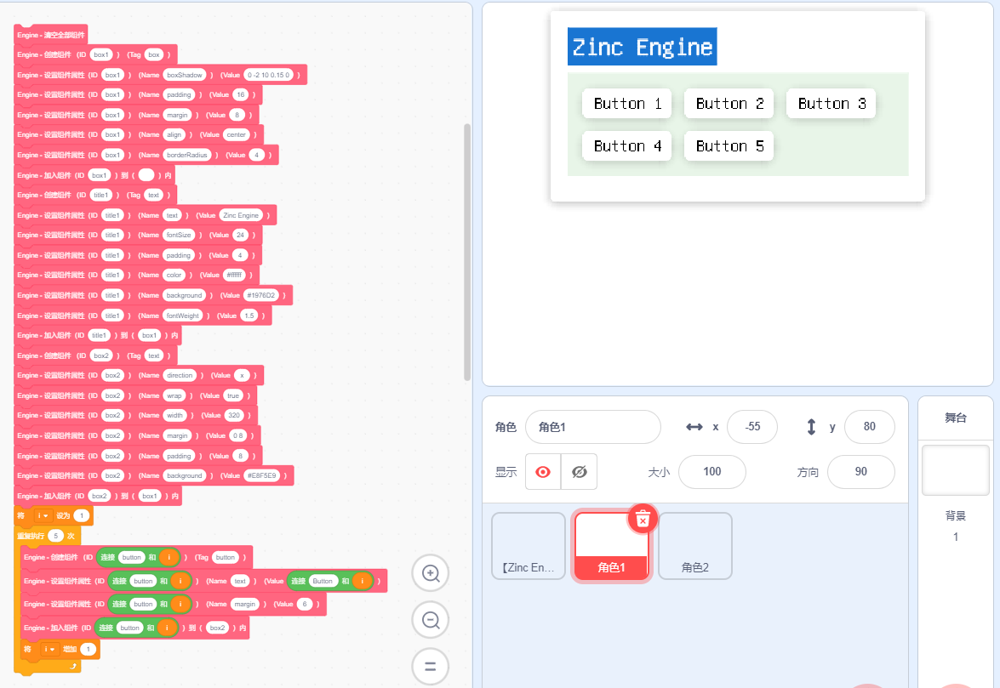
上图中展示的界面结构是这样的：
Box 组件 : ( ID = "box1", boxShadow = "0 -2 10 0.15 0", margin = "8", align = "center", borderRadius = "4" ) | |_ Text 组件 : ( ..... ) |_ Box 组件 : ( ID = "box2", direction = "x", wrap = "true", width = "320", margin = "0 8", padding = "8", background = "#E8F5E9" ) | |_ Button 组件 : ( ...... ) |_ Button 组件 : ( ...... ) |_ Button 组件 : ( ...... ) |_ Button 组件 : ( ...... ) |_ Button 组件 : ( ...... )- Box 组件
box2（包裹着按钮的）的属性direction为x，因此它内部的组件是从左到右排列的；而未设定属性direction的 Box 组件box1（最外层的）内部则是默认从上到下排列的。 box2拥有属性wrap为true、且正确的设定了宽度width为320，那么在它排列内部的组件时，一旦宽度到达了 320、便会自动换行。
按钮组件 Button
一个拥有预置样式的按钮组件。
- 该组件拥有的特色属性和文本组件 Text 完全相同
当按钮被按下时将会触发
click事件，关于事件的使用方法下文会详细说明。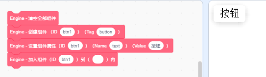
单选组件 Radio / 复选组件 Checkbox
单选和多选按钮。
该组件拥有特色属性：
- 值
checkbox：true或false。表示该组件当前的选择状态，可以读取或者设置这个值。
当 Checkbox 组件被点击时会触发事件
changed并改变它的值，可以通过监听这个事件来得知选择状态发生了改变。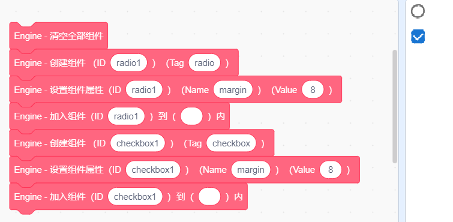
- 值
滑动条 Slider
通过滑动来选择数值。
该组件拥有特色属性：
- 最小值
min：
一个数字，是该滑动条可选择数值的最小值。 - 最大值
max：
一个数字，是该滑动条可选择数值的最大值。 - 值
value：
一个数字。表示滑动条当前的值，可以读取或者设置这个值。
当该组件的值改变时将会触发事件
slide，可以监听该事件~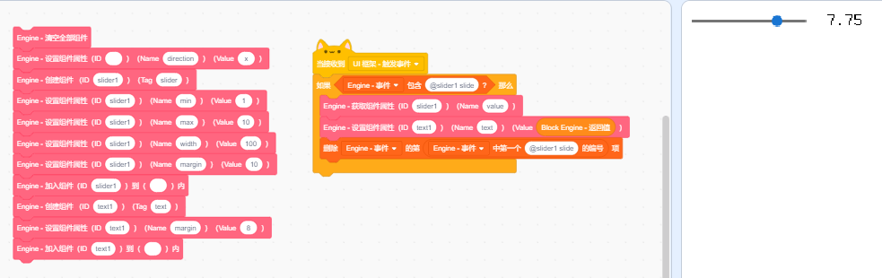
- 最小值
输入框 Input
一个输入框。
该组件拥有特色属性：
- 值
value：
一个字符串。表示输入框内的值，可以读取或者设置这个值。 - 占位符
placeholder：
一个字符串，当值为空时显示该字符串。 - 该组件也支持文本组件 Text 所支持的属性
当该组件的值改变时将会触发事件
input，可以监听该事件。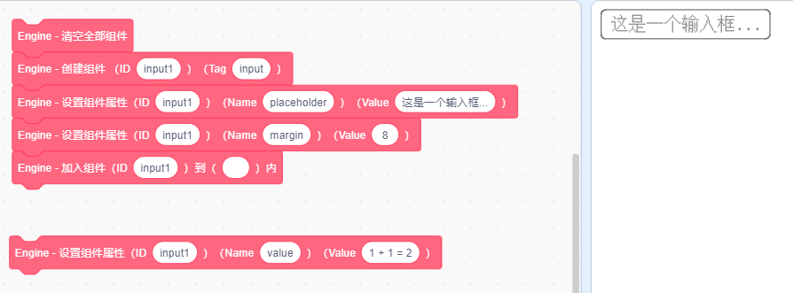
- 值
换行 Br
可换行的（属性
wrap为true）盒子组件 Box 在该组件处会立刻换行。
属性
通过设置组件的属性可以自定义组件的样式，对于可交互组件如滑动条 Slider、复选框 Checkbox 和输入框 Input，还可以通过属性 value 来获取该组件的当前的值。下面是所有组件都拥有的可选属性：
组件宽度
width、组件高度height：
一个数字，即组件的宽度 / 高度。该属性未被设置时，默认按内容大小确定组件宽度 / 高度。
例：属性width为20即设置组件的宽度为 20，可换行的（warp属性为true）盒子组件 Box 或者文本组件 Text 的宽度达到 20 后便会自动换行，如果不设置宽度、便不会自动换行。内间距
padding、外间距margin：
有三种可选值：- 一个数字
[all]，如20，代表该组件的内 / 外间距上下左右均为 20。 - 两个数字
[x] [y]，如10 20，代表该组件的内 / 外间距上下为 10、左右为 20。 - 四个数字
[top] [right] [bottom] [left]，如1 2 3 4，代表该组件的内 / 外间距上边为 1、右边为 2、下边为 3、左边为 4。
也可以设置属性
paddingLeft、marginLeft、paddingRight......- 一个数字
背景颜色
background、内容颜色color：
一个 RGB 颜色值，为该组件的背景 / 内容颜色。
例：属性color为#00897B即该组件的内容（如文本）颜色为#00897B。边框
border：
一个数字、一个 RGB 颜色值[borderWidth] [borderColor]，分别是边框宽度和颜色。
例：属性border为2 #000000即该组件拥有一个宽为 2、颜色为#000000（黑色）的边框。组件圆角
borderRadius：
一个数字，为组件的圆角半径。例如6。显示
display：
true或false，默认为true，当设定为false时组件将不会显示。阴影
boxShadow：
五个数字[offsetX] [offsetY] [blur] [opacity] [brightness]，分别是阴影在 X 方向上的偏移、在 Y 方向上的偏移、扩散大小、透明度（0 ~ 1）、亮度（0 ~ 100，亮度为 0 时阴影是黑色的、亮度为 100 时则是白色的）。
例：属性boxShadow为0 -2 10 0.15 0时，组件将拥有一个向下偏移 2、扩散 10、透明度为 0.15 的黑色阴影。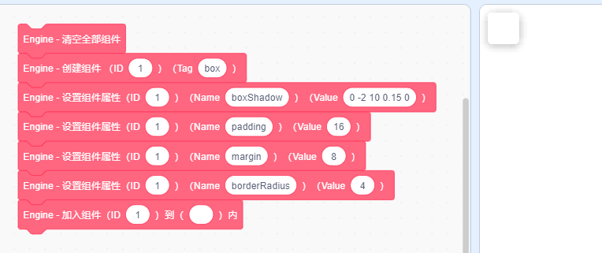
透明度
opacity：
一个数字，范围是 0 ~ 1，代表组件的透明度。（不建议使用）对齐方式
align：
left或center，默认为left，当值为center时居中对齐。定位
position：
default、relative、absolute或fixed，默认为default。- 当值为
relative时，支持使用left、right使该元素在原本位置的基础上进行偏移； - 为
absolute时，元素“被移出文档流”、不占用空间，使用left、right可使该元素在其父组件位置的基础上进行偏移； - 为
fixed时，元素“被移出文档流”、不占用空间，使用left、right可使该元素在根组件位置的基础上进行偏移。
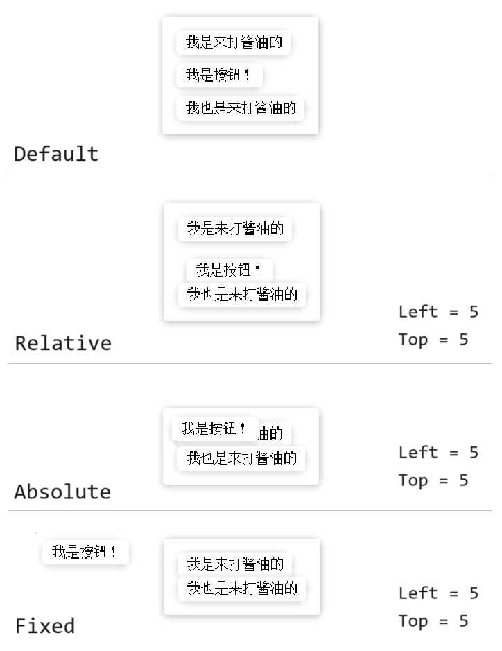
- 当值为
监听鼠标悬停
listenHover：
false或true。默认为false。
当值为true时，鼠标悬停在组件上时会触发事件mouseover、离开组件时会触发事件mouseleave。
同时 Zinc Engine 还支持动态属性，使用动态属性可以在鼠标悬停或按下时应用不同的属性，类似 CSS 中的选择器。若要设置动态属性，请先将组件的 listenHover 属性设为 true，并设置属性名前带有 hover: 或 active: 的属性。
若属性 hover:background 的值为 #f6f6f6，则当鼠标悬停在该元素上时，就将该元素的背景 background 设为 #f6f6f6。
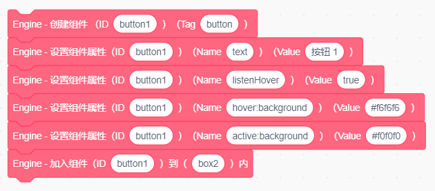
事件
当用户和组件发生交互时会触发事件。当触发事件时，列表 [ Engine - 事件 ] 中会新增一项 @[ID] [Event] 并广播 [ Zinc Engine - 触发事件]。
如一个 ID 为 Button1 的按钮触发点击事件 click 时，列表中就会新增一项 @Button1 click，并广播 [ Zinc Engine - 触发事件 ]。
现在有这些事件：
点击事件
click：
当组件被点击时触发。所有组件都会触发。鼠标按下
mousedown、鼠标松开mouseup：
当鼠标在该组件处按下 / 按下后松开时触发。所有组件都会触发。输入
input：
当输入组件 Input 的值改变时触发。所有的输入组件 Input 都会触发。复选组件的值改变
changed：
当复选框组件 Checkbox 的值改变时触发。所有的复选框组件 Checkbox 都会触发。滑动条的值改变
changed：
当滑动条组件 Slider 的值改变时触发。所有的滑动条组件 Slider 都会触发。鼠标悬停
mousehover、鼠标离开mouseleave：
当鼠标在该组件上悬停 / 悬停后离开时触发。只有属性listenHover为true的组件会触发。
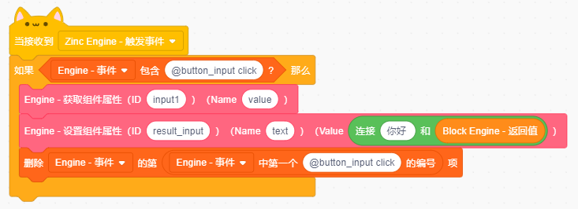
如果希望监听事件，可以使用广播接收器，接收到广播 [ Zinc Engine - 触发事件 ] 后检查列表 [ Engine - 事件 ] 是否有希望监听的事件，如果有的话就进行对应的处理，然后删除列表 [ Engine - 事件 ] 中的这一项事件（否则会导致事件被错误地重复触发）。
提升
配置
通过修改列表 [ Engine - 配置 ] 可以修改引擎的配置，格式为一项配置名、一项配置值，如：
@quality
8
@smoothScroll
1
@devMode
1
可选配置项有：
- 渲染质量
@quailty：正整数，0 ~ 10 之间。 - 平滑滚动
@smoothScroll：默认启用平滑滚动。当这项设为0时禁用平滑滚动，适合卡顿时使用。 - 开发者模式
@devMode：默认禁用开发者模式。当这项设为1时按下空格可以查看渲染所用时间（毫秒）。 - 自动渲染
@autoRender：默认启用自动渲染。当这项设为0时关闭自动渲染，此时用户滚动、组件属性改变都不会自动重新渲染页面，只有广播 [ Zinc Engine - 渲染] 时才会渲染。
声明
- Zinc Engine by waterblock79 is licensed under CC BY 4.0.
- 作品中内嵌了 Unifont 15.1.04，遵守 SIL Open Font License (OFL) version 1.1，在此表示由衷的感谢！（根据 Unifont 官网：“As of Unifont version 13.0.04, the fonts are dual-licensed under the SIL Open Font License (OFL) version 1.1 and the GNU GPL 2+ with the GNU font embedding exception. The SIL OFL is available at OFL-1.1.txt.”）